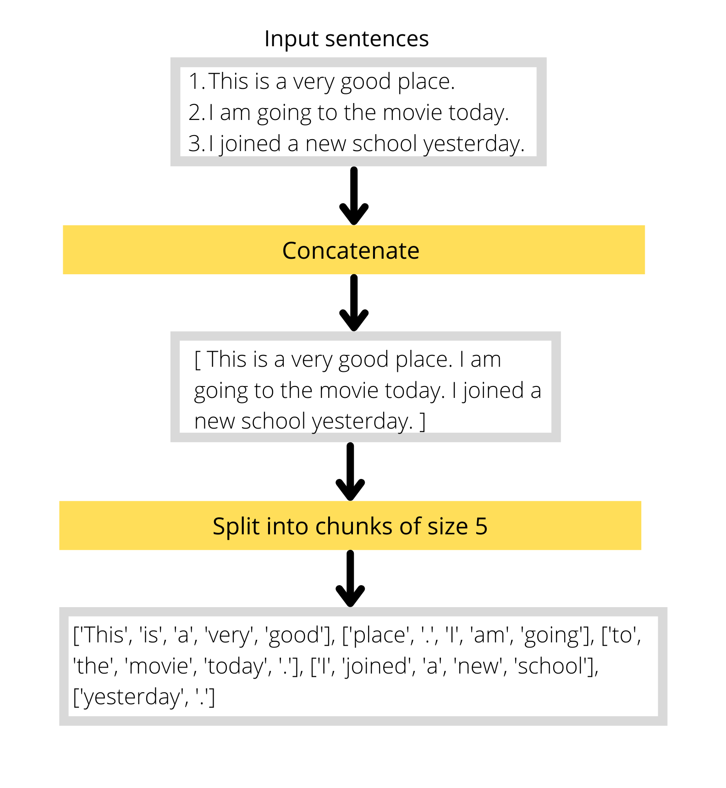

Masked language modelling¶
Th term masked language modelling(MLM) may feel a bit alien to some of you. No worries, we will definitely dig deeper into it in this chapter.
What is masked language modelling?¶
As humans we adapt to a field like medicine by going through an extensive 5 year MBBS course and then we apply our skills, similarly we make our transformer model knowledgeable in a specific domain like medicine by pretraining it using Masked Langauage Modelling(MLM), so that our model will perform better, say for example, on a classification task related to medical domain.
As you have an understanding of why masked language modelling is used, I will show you how it’s done.
This is how the final inference will look like:

We input a sentence with some words replaced/masked with a special token [MASK]. The job of the model is to predict the correct word to fill in place of [MASK]. In the above figure the model predicts ‘happiness’ as the word to be filled in place of [MASK], which converts the input sentence from 'The goal of life is [MASK].' to 'The goal of life is happiness.'.
The training data will have randomly masked sentences as inputs to the model and the complete sentence(without any masks) as the label(as shown below):
Input: 'The full cost of damage in [MASK] Stewart, one of the areas [MASK] affected, is still being [MASK].'
Label: 'The full cost of damage in Newton Stewart, one of the areas worst affected, is still being assessed.'
The model will have to predict the correct words corresponding to the masks. In this way the model will learn about relationship between different words in a sentence. The task is some what similar to ‘fill in the blanks’ type questions that you might have encountered in your high school.
Now let’s prepare the dataset that we will be using for this task.
Dataset¶
The dataset that we will be using is the extreme summarization dataset which is a collection of news articles and their corresponding summaries. We will drop the ‘summary’ feature and use only the new articles.
Now let’s look into the structure of our dataset.
Downloading the dataset¶
We will dounload the dataset from huggingface using their ‘datasets’ library.
from datasets import load_dataset
# xsum -> eXtreme SUMmarization
raw_datasets = load_dataset('xsum')
print(raw_datasets)
Output:
DatasetDict({
train: Dataset({
features: ['document', 'summary', 'id'],
num_rows: 204045
})
validation: Dataset({
features: ['document', 'summary', 'id'],
num_rows: 11332
})
test: Dataset({
features: ['document', 'summary', 'id'],
num_rows: 11334
})
})
As you can see from the above figure, we’ve a train, validation and test set. Of which, the training set is a huge one. So, for the sake of simplicity and for faster training, we will take a subset of the ‘train’ set.
We will take 10,000 rows from the ‘train’ set for training and 2000(20% of the training size) rows for testing:
train_size = 10000
test_size = int(0.2*train_size)
seed = 42
# 10,000 rows for training and 2000 rows for testing
downsampled_datasets = raw_datasets['train'].train_test_split(
train_size=train_size,
test_size=test_size,
seed=seed,
)
print(downsampled_datasets)
Output:
DatasetDict({
train: Dataset({
features: ['document', 'summary', 'id'],
num_rows: 10000
})
test: Dataset({
features: ['document', 'summary', 'id'],
num_rows: 2000
})
})
Preprocessing the dataset¶
Now let’s prepare our dataset in a way that is needed for our model. Since our task is masked language modelling which is done to give domain knowledge to our model, we cannot afford to lose much information from our input sentences due to truncation.
The maximum length(of input sentence) of our model is 512, all the inputs that are longer than this will be truncated, but we don’t want this to happen.
So, we will concatenate all the input sentences and divide them into smaller chunks, and then each chunk will be the inputs to the model as shown in the figure below:
The only difference is that, instead of words it will be tokens. So we will write a function to tokenize the input sentences and then do the above mentioned steps on the tokenized outputs.
Let’s load the tokenizer for our model:
from transformers import AutoTokenizer
# model name
checkpoint = 'distilbert-base-uncased'
tokenizer = AutoTokenizer.from_pretrained(checkpoint)
We will be splitting our inputs into chunks of size 128. When splitting the inputs, the last chunk will be smaller than 128, so we will drop that for now.
chunk_size = 128
def create_chunks(examples):
# tokenize the inputs
inputs = tokenizer(examples['document'])
# cocatenate the inputs
concatenated_examples = {k: sum(v, []) for k, v in inputs.items()}
total_len = (len(concatenated_examples['input_ids'])//chunk_size)*chunk_size
# create chunks of size 128
results = {
k: [v[i: (i+chunk_size)] for i in range(0, total_len, chunk_size)]
for k, v in concatenated_examples.items()
}
results['labels'] = results['input_ids'].copy()
return results
Let’s try out the function on our dataset:
preprocessed_datasets = downsampled_datasets.map(
create_chunks,
batched=True,
remove_columns=['document', 'summary', 'id']
)
Let’s check the size of our inputs now:
sample = preprocessed_datasets['train'][:5]
for i in sample['input_ids']:
input_length = len(i)
print(input_length)
Output:
128
128
128
128
128
As you can see, the size of every input is now 128.
Now let’s see how our inputs and labels look like,
sample_inputs = sample['input_ids'][0]
sample_labels = sample['labels'][0]
# decode the tokens
print("INPUTS:\n", tokenizer.decode(sample_inputs))
print("\nLABELS:\n", tokenizer.decode(sample_labels))
Output:
INPUTS:
[CLS] media playback is not supported on this device varnish and james were third in the women's team sprint but the two men's squads failed to reach their respective medal ride - offs. the sprint team were fifth, while the pursuit quartet finished eighth. " we've had some problems, " said pursuit rider ed clancy. britain won the four - man pursuit event in 2012 and took silver in 2013. they also won gold at the 2008 and 2012 olympic games. but two - time olympic gold medallist clancy, sam harrison, owain doull and jon dibben finished eighth this time in four minutes 4. 419 seconds
LABELS:
[CLS] media playback is not supported on this device varnish and james were third in the women's team sprint but the two men's squads failed to reach their respective medal ride - offs. the sprint team were fifth, while the pursuit quartet finished eighth. " we've had some problems, " said pursuit rider ed clancy. britain won the four - man pursuit event in 2012 and took silver in 2013. they also won gold at the 2008 and 2012 olympic games. but two - time olympic gold medallist clancy, sam harrison, owain doull and jon dibben finished eighth this time in four minutes 4. 419 seconds
Both of them looks the same, there are no masked words at all. But what we require is inputs with randomly masked words like this:
This [MASK] is going to the park [MASK].
and the corresponding labels with no masked words like below:
This man is going to the park tomorrow.
So, the only part that’s remaining is randomly masking the inputs which can be done with DataCollatorForLanguageModeling from transformers library just like below:
from transformers import DataCollatorForLanguageModeling
collate_fn = DataCollatorForLanguageModeling(
tokenizer,
mlm_probability=0.15
)
We have set an additional parameter mlm_probability=0.15 which means that each token has a 15% chance to be masked. We cannot pass all the inpputs directly to this collate_fn, instead we need to put each example(containing input_ids, attention_mask and labels) into a list as shown below:
# first 5 examples from train set
first_5_rows = preprocessed_datasets['train'][:5]
input_list = [dict(zip(first_5_rows, v)) for v in zip(*first_5_rows.values())]
input_list is a list containing examples and will have a format like below:
[
{'input_ids': [...], 'attention_mask': [...], 'labels': [...]},
{'input_ids': [...], 'attention_mask': [...], 'labels': [...]},
{'input_ids': [...], 'attention_mask': [...], 'labels': [...]},
{'input_ids': [...], 'attention_mask': [...], 'labels': [...]},
{'input_ids': [...], 'attention_mask': [...], 'labels': [...]},
]
Now we can apply our collator on this list:
collate_fn(input_list)
While applying the above function we will get a new set of masked input_ids and a new set of labels. All the tokens in the labels except for the tokens corresponding to the mask will have a value of -100, which is a special number because it is ignored by our loss function :) So while calculating the loss, we will only consider the losses corresponding to the masked words and ignore others.
Here is an example to illustrate the same:
Suppose we have a set of tokens(converted to integers) like this: [23, 25, 100, 134, 78, 56]
Once we pass the above inputs to our collator, we will get a randomly masked output(where 103 is the id corresponding to the mask): [23, 103, 100, 134, 103, 56] and the labels corresponding to the new inputs will be these: [-100, 25, -100, -100, 78, -100] where the real token ids are shown only for the masked tokens, for others it’s replaced with -100.
Creating the dataloaders¶
As we have our training dataset processed and our collator in place, we can create our training dataloader:
from torch.utils.data import DataLoader
batch_size = 64
train_dl = DataLoader(
preprocessed_datasets['train'],
batch_size=batch_size,
shuffle=True,
collate_fn=collate_fn
)
Our collator applies random masking each time we call it. But we need a fixed set with no variability during evaluation so that we have a fair comparison after each epoch.
So, instead of using DataCollatorForLanguageModeling directly in our test dataloader, we will wrap it in a function and apply to the test set before creating the dataloader:
def apply_random_mask(examples):
example_list = [dict(zip(examples, v)) for v in zip(*examples.values())]
output = collate_fn(example_list)
# convert the values to numpy arrays
return {k: v.numpy() for k, v in output.items()}
test_dataset = preprocessed_datasets['test'].map(
apply_random_mask,
batched=True
)
and then use the default_data_collator from transformers library to collate our data for the test dataloader.
from transformers import default_data_collator
test_dl = DataLoader(
test_dataset,
batch_size=batch_size,
shuffle=False,
collate_fn=default_data_collator
)
We’ve our training and testing dataloader in place, now it’s time to train the model.
Training the model¶
First we will create the model, optimizer and move everything to GPU using accelerate,
from transformers import AutoModelForMaskedLM
from accelerate import Accelerator
model = AutoModelForMaskedLM.from_pretrained(checkpoint)
opt = optim.AdamW(model.parameters(), lr=1.23e-5)
accelerator = Accelerator()
# move everything to GPU
train_dl, test_dl, model, opt = accelerator.prepare(train_dl, test_dl, model, opt)
Now let’s define two functions, one for the training loop and the other for the evaluation loop, just like we did in the last chapter. One thing to note is that the metric that we will be using to evaluate our model performance is called perplexity, which here is the exponential of cross entropy loss.
import math
import torch
def run_training_loop(train_dl):
losses = 0
model.train()
for batch in train_dl:
opt.zero_grad()
out = model(**batch)
accelerator.backward(out.loss)
opt.step()
# aggregate the losses over each batch
losses += out.loss.item()
losses /= len(train_dl)
# exponential of cross entropy
perplexity = math.exp(losses)
return perplexity
Similarly, we will write our evaluation loop:
def run_evaluation_loop(test_dl):
losses = 0
model.eval()
with torch.no_grad():
for batch in test_dl:
out = model(**batch)
# aggregate the losses over each batch
losses += out.loss.item()
losses /= len(test_dl)
# exponential of cross entropy
perplexity = math.exp(losses)
return perplexity
Now we will train the model for 3 pochs and save after each epoch:
epochs = 3
for epoch in range(epochs):
train_perplexity = run_training_loop(train_dl)
test_perplexity = run_evaluation_loop(test_dl)
print(f"epoch: {epoch} train_acc: {train_perplexity} val_acc: {test_perplexity}")
# save the model at the end of epoch
torch.save(model.state_dict(), f"model-v{epoch}.pt")
Testing the final model¶
Now let’s test the model with an example:
text = """
Rajesh Shah, one of the shop's co-owners, told the [MASK]
there would be a new name.
"""
# tokenize the inputs and pass to model
inputs = tokenizer(text, return_tensors='pt')
out = model(**inputs)
# get the token id of [MASK]
mask_token_id = tokenizer.mask_token_id
# find the position of [MASK] in the input
mask_idx = torch.where(inputs['input_ids']==mask_token_id)[1]
# decode the model prediction corresponding to [MASK]
preds = out.logits.argmax(dim=-1)[0]
mask_pred = tokenizer.decode(preds[mask_idx])
# replace [MASK] with predicted word
final_text = text.replace('[MASK]', mask_pred)
print(final_text)
Output:
Rajesh Shah, one of the shop's co-owners, told the bbc there would be a new name.
Aaaand, we have a model that can do fill in the blanks for you ;)